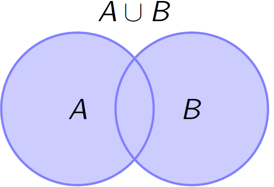
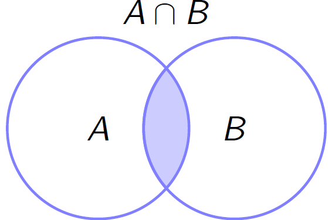

Introdução à Probabilidade
Introdução
" A razão do número de todos os casos favoráveis à um acontecimento, para o de todos os casos possíveis é a probabilidade buscada, a qual é portanto uma fração …"
“A teoria da probabilidade nada mais é do que o senso comum reduzido à cálculo.”
A Teoria da Probabilidade é o ramo da matemática que desenvolve e pesquisa modelos (probabilísticos) que podem ser utilizados para quantificar e explicar os fenômenos aleatórios. A Inferência e os métodos estatísticos são totalmente fundamentados nessa teoria e portanto, torna-se essencial o seu estudo e compreensão. Os modelos probabilísticos utilizados para estudar um fenômeno aleatório podem variar em complexidade, mas todos eles possuem ingredientes básicos comuns.
Tipos Experimentos
Experimentos Determinísticos
Dizemos que um experimento é determinístico quando repetido inúmeras vezes, em condições semelhantes, conduz a resultados essencialmente idênticos. Ex.:
- Aceleração da gravidade;
- Leis da Física e da Química.
Experimentos Aleatório
Um experimento aleatório (\(\varepsilon\)) é aquele que repetido sob as mesmas condições pode levar a resultados diferentes, isto é, não se pode prever seu resultado. Por Ex:
- Lançamento de uma moeda não-vicida;
- Lançamento de um dado honesto;
- Tempo de falha de um equipamento eletrônico;
- Taxa de inflação do próximo mês.
Exemplos:
\(\varepsilon_1\): Lançamento de uma moeda honesta;
\(\varepsilon_2\): Lançamento de um dado honesto;
\(\varepsilon_3\): Lançamento de duas moedas honestas;
\(\varepsilon_4\): Selecionar um morador da cidade de Londrina e medir sua altura;
\(\varepsilon_5\): Observar o tempo de falha de um componente mecânico;
\(\varepsilon_6\): Número peças defeituosas num processo de fabricação
Espaço Amostral
O espaço amostral é o conjunto de todos os resultados possíveis associados a um experimento (aleatório), repesentado por \(\Omega\). Sendo o espaço amostral um conjunto, ele poderá ser finito ou infinito.
Dos exemplos anteriores dos experimentos aleatórios, temos:
\(\Omega_{1} = \{c, k\}\), em que \(c =\) cara e \(k =\) coroa
\(\Omega_{2} = \{1, 2, 3, 4, 5, 6\}\), em que \(i=1,\ldots,6\) são as faces
\(\Omega_{3} = \{(c,c) , (c,k) , (k,c) , (k,k)\}\)
\(\Omega_{4} = \{ h \in \mathbb{R},\, h > 0\}\)
\(\Omega_{5} = \{ t \in \mathbb{R},\, t > 0\}\)
\(\Omega_{6} = \{0, 1, 2, 3, 4,\ldots\}\)
Evento
Um evento (aleatório) é um subconjunto de \(\Omega\), ou seja um conjunto de resultados de um experimento aleatório. Em geral, os eventos são representados por letras maiúsculas, como \(A\), \(B\), \(C\), \(\ldots\)
Dos exemplos anteriores dos experimentos aleatórios, temos:
\(A:\) sair cara \(\Longrightarrow\) \(A = \{c\}\);
\(B:\) sair a face \(4\) \(\Longrightarrow\) \(B = \{4\}\);
\(C:\) sair pelo menos uma cara \(\Longrightarrow\) \(C = \{(c,c),(c,k),(k,c) \}\);
\(D = \{ h \in \mathbb{R},\, 0 \leq h \leq 1,70\,\mbox{m}\}\);
\(E = \{ t \in \mathbb{R},\, 0 \leq t \leq 5\,\mbox{anos}\}\);
\(F = \{0, 1, 2, 3\}\)
Operações com Eventos
Em muitos problemas de probabilidade interessam-nos eventos que podem ser expressos em termos de dois ou mais eventos, formando uniões, interseções e complementos. Os espaços amostrais e os eventos, especialmente as relações entre os eventos, costumam ser ilustrados por diagramas de Venn, que auxiliam na ``visualização’’ dos conceitos básicos de probabilidade.
Observa-se que a Teoria dos conjuntos é utilizada para definir operações com eventos.
Definições
O evento impossível, é o conjunto que não possue elementos, denotado por \(\emptyset\).
O evento certo, denotado por \(\Omega\), é o próprio espaço amostral, isto é, \(A = \Omega\).
O evento Elementar é aquele que contém apenas um dos elementos do espaço amostral.
Dois eventos \(A\) e \(B\) são independentes, se a ocorrência de um deles não interfere na ocorrência do outro evento.
União de eventos
- o evento que consiste da união de todos os elementos dos eventos que a compõem é denotado por
\[A \cup B = \{\omega \in \Omega:\, \omega \in A \quad \text{ou} \quad \omega \in B\}.\]
knitr::include_graphics("img/uniao.png")
Intersecção de eventos
- A intersecção entre dois eventos é formada pelos elementos em comuns dos dois eventos que a compõem, isto é
\[A \cap B = \{\omega \in \Omega:\, \omega \in A \quad \text{e} \quad \omega \in B\}.\]
knitr::include_graphics("img/interseccao.png")
Eventos disjuntos
- Dois eventos \(A\) e \(B\) são mutuamente exclusivos se eles forem disjuntos, isto é, \(A \cap B = \emptyset\).
- Exemplo: Lançamento de um dado honesto
- \(A:\) sair o número \(2\) \(\Longrightarrow\) \(A = \{2\}\)
- \(B:\) sair o número ímpar \(\Longrightarrow\) \(B = \{1,3,5\}\)
- Observa-se que os eventos \(A\) e \(B\) são mutuamente exclusivos, ou seja, \(A \cap B = \emptyset\).
- Exemplo: Lançamento de um dado honesto
knitr::include_graphics("img/Disjuntos.png")
Evento complementar
- Seja \(A\) um evento tal que \(A \subset \Omega\). O evento complementar de \(A\) (\(A^{c}\)) é o subconjunto de todos os elementos de \(\Omega\) que não estão em \(A\), isto é
\[A^{c} = \{\omega: \omega \in \Omega \,\, \text{e} \,\, \omega \notin A \}\]
knitr::include_graphics("img/Comp.png")
Além disso,
\[A \,\, \text{e} \,\, A^{c} \,\, \text{formam um partição de} \,\, \Omega \implies \left\{ \begin{array}{l} A \cup A^{c} = \Omega \\ A \cap A^{c} = \emptyset \end{array}\right.\]
Exercícios
Defina um espaço amostral para cada um dos seguintes experimentos aleatórios:
- Uma pessoa concorda ou não com uma afirmação;
- Uma moeda honesta é lançada três vezes e observam-se as faces obtidas;
- Uma urna contém 10 bolas azuis e 10 vermelhas com dimensões rigorosamente iguais. Três bolas são selecionadas ao acaso com reposição e as cores anotadas;
- Lance um dado honesto até que a face 3 ocorra pela primeira vez.
Considere o lançamento de um dado honesto e os eventos \(A = \{ 1, 2, 3, 4\}\), \(B = \{\omega: \omega \leq 3\}\), \(C = "\text{face é par}"\), \(D = "\text{face é número primo}"\). Determine:
Uniões
- A \(\cup\) B
- A \(\cup\) C
- A \(\cup\) D
Intesecções
- A \(\cup\) B
- A \(\cup\) C
- A \(\cup\) D
Complementos
- A\(^{c}\)
- B\(^{c}\)
- D\(^{c}\)
Sendo \(A\) e \(B\) dois eventos em um mesmo espaço amostral, “traduza” para a linguagem da Teoria dos Conjuntos as seguintes situações:
- Pelo menos um dos eventos ocorre;
- O evento A ocorre, mas B não;
- Nenhum deles ocorre.

Este conteúdo está disponível por meio da Licença Creative Commons 4.0